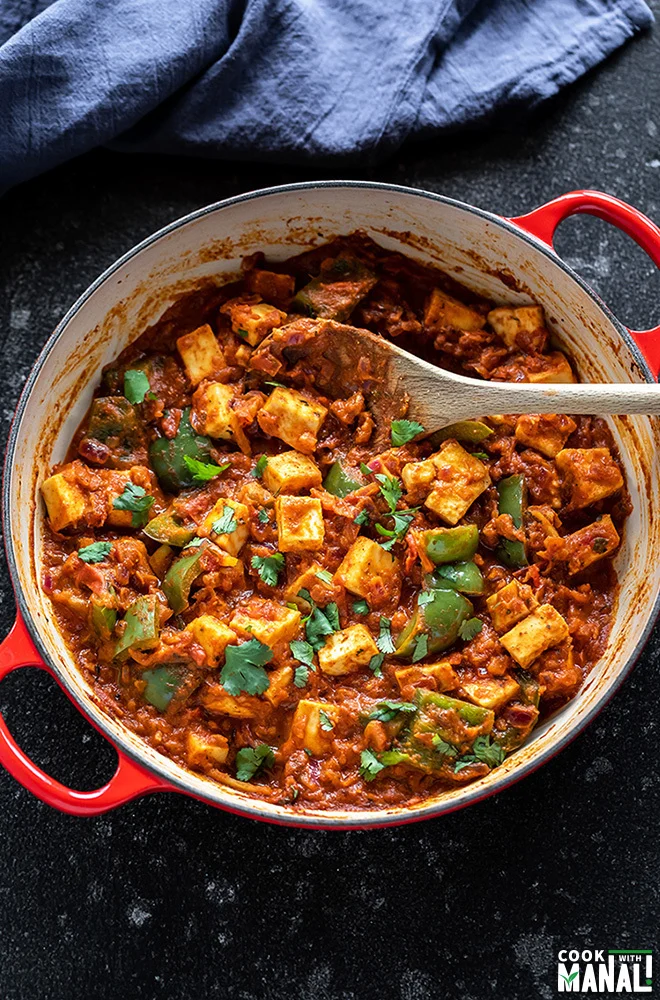

kadhai paneer

Description
Kadai Paneer is a vibrant, tangy, deeply spiced paneer recipe that is
perfect for enjoying all year round. Made with pantry staples like onions,
tomatoes, capsicum (green bell peppers) and Indian spices, this bright
dish comes together in 30 minutes. I share two ways to make this curry – a
semi dry restaurant style version and a spicy home style gravy.
ingredients
- Paneer
- tomatoes
- capsicum
- onions
- spices
Steps
- Make Kadai Masala
- Sauté onions, tomatoes & spices
- Now add 2.5 to 3 cups finely chopped tomatoes.
- Then add the ground kadai masala to the tomatoes
- Sauté capsicum
- Add 1 to 2 green chilies or 1 small serrano pepper (slit)
- Add about ½ cup water
- Mix very well and sauté until the capsicum is al dente
- Assemble Kadai Paneer
-
Serve Kadai Paneer hot from the pan with roti, naan, Paratha or pudina
paratha.